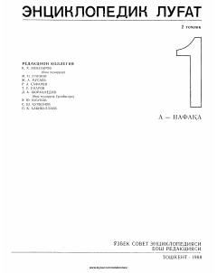

ELO'zbek tilidagi 30 000 ga yaqin maqolani jamlagan universal ensiklopedik lug'at.
Ushbu ikki jildlik ensiklopedik lug'atning birinchi jildi ijtimoiy-siyosiy hayot, fan, texnika, adabiyot va san'at sohalariga oid 30 000 ga yaqin maqolani o'z ichiga oladi. Kitobda O'rta Osiyo xalqlari tarixi, mashhur shaxslar biografiyasi va turli mamlakatlar haqida qimmatli ma'lumotlar jamlangan.